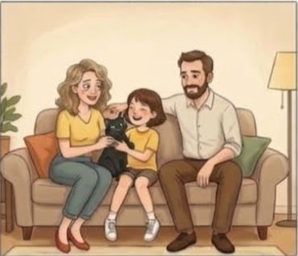
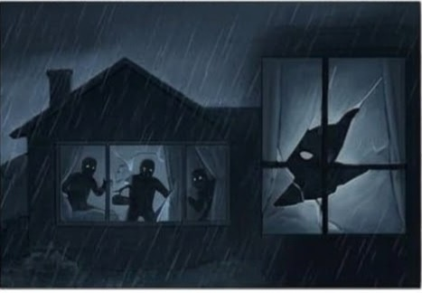
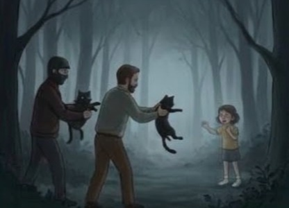
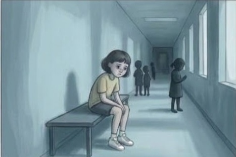
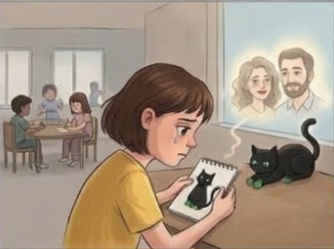

Լիլիթն ուղիղ տասը տարեկան էր։ Նա այնպիսի աղջիկ էր, որ նկատում էր անգամ պատի վրայի ստվերի ամենաթեթև շարժումը կամ ծաղկամանի մեջ ծաղկի բացվելու դանդաղ պահը: Նա ուներ հիասքանչ, ջերմծնող ծնողներ և մի սքանչելի սև կատու՝ կանաչ աչքերով ու թաթերի ներսի կանաչ փափուկ բարձիկներով, ում անվանում էր Թավշիկ:
Մայրիկը միշտ ջերմությամբ էր գրկում նրան՝ իր ալիքաձև մազերով ու վառ կարմիր շրթներկով, իսկ հայրիկը՝ իր խնամված մորուքով ու բարի ժպիտով, ամեն երեկո հեքիաթ էր կարդում Լիլիթի համար: Այդ գիշեր նրանք հագել էին իրենց սիրելի սովորական հագուստները, Լիլիթն էլ իր սիրելի դեղին շապիկով, հարմարավետ շորտով ու սպիտակ կոշիկներով պատրաստվել էր քնելու՝ կարճ շագանակագույն մազերը թեթևակի հետ գցած, որպեսզի ականջների հետևից երևան նրա մեծ աչքերն ու մտածկոտ հայացքը:

Բայց գիշերը, երբ տունը թաթախված էր խորը լռության մեջ, անծանոթ ու սառը ստվերներ ներխուժեցին նրանց աշխարհ: Ամեն ինչ տեղի ունեցավ ակնթարթորեն. աղմուկ, ցավոտ լռություն, և Լիլիթն այլևս երբեք չտեսավ իր ծնողներին: Նրա փոքրիկ քիթն ու բերանը սեղմվեցին վախից, իսկ աչքերում սառեց արցունքը:

Չարագործները նաև խլեցին նրա լավագույն ընկերոջը՝ Թավշիկին, տարան անտառի խորքը և կորցրին այնտեղ՝ թողնելով աղջկան բոլորովին մենակ:

Այդ սարսափելի գիշերից հետո Լիլիթին տեղափոխեցին մի հանգիստ, բայց խորհրդավոր հոգեբուժարան, որտեղ նմանատիպ վշտեր տեսած այլ երեխաներ էլ կային: Այնտեղ պատերը սպիտակ էին, և օրերը ձգվում էին դանդաղ ու անվերջ:

Լիլիթը նստում էր լուսամուտի մոտ, նայում հեռվում երևացող անտառին և մտքում նկարում Թավշիկի կանաչ աչքերը: Նա գիտեր, որ չնայած ամեն ինչին, նրա ծնողների ջերմությունն ու կատվի փափուկ թաթերի հպումը հավերժ մնալու են իր փոքրիկ, բայց անսահման զգայուն սրտում:
